Progetti

Progetti
 Team
Team

Un sistema avanzato per l'allenamento personalizzato
Il progetto SuperNAO 2025 prende forma con una visione tanto innovativa quanto ambiziosa: ridefinire il ruolo della robotica nella vita quotidiana delle persone, rendendo NAO, il celebre robot umanoide, un compagno fidato nei percorsi di salute, attività fisica e benessere psicofisico. L’obiettivo non è solo quello di fornire supporto tecnico, ma di costruire un’esperienza altamente personalizzata e coinvolgente, in grado di adattarsi alle esigenze specifiche di ogni individuo. NAO diventa così personal trainer interattivo e consulente nutrizionale digitale, accessibile a tutti, anche a persone con disabilità fisiche o cognitive, promuovendo un approccio inclusivo e sostenibile al fitness e alla salute.
Per dare concretezza e autorevolezza al progetto, il team ha coinvolto un’ampia rete di professionisti altamente qualificati. Tra questi, spiccano atleti e tecnici del prestigioso circolo olimpico e paraolimpico Aquaniene, punto di riferimento nazionale per lo sport d’élite e l’inclusione sportiva. A supporto dell’aspetto nutrizionale e scientifico, sono intervenuti nutrizionisti professionisti e docenti dell’Università La Sapienza di Roma, i quali hanno contribuito a strutturare piani alimentari personalizzabili, linee guida sul benessere e protocolli validati scientificamente. Questo approccio integrato garantisce una progettazione attenta, competente e allineata agli standard più elevati della ricerca e della pratica sportiva.
Il vero salto di qualità è avvenuto grazie alla partnership strategica con Fairtile, una startup londinese specializzata nello sviluppo di soluzioni avanzate di machine learning e intelligenza artificiale applicata. Grazie a questa collaborazione internazionale, è stato possibile integrare in NAO un motore di intelligenza artificiale capace di apprendere dai comportamenti degli utenti e adattare le interazioni in modo sempre più naturale, efficace e personalizzato. Il robot non è più un semplice esecutore, ma un interlocutore attivo, capace di dialogare con gli utenti, comprenderne le necessità e offrire suggerimenti dinamici per migliorare il loro stile di vita.
Grazie a una sofisticata combinazione di tecnologie, NAO è ora in grado di riconoscere i volti, distinguendo clienti abituali, nuovi utenti e persino membri dello staff, personalizzando ogni interazione fin dal primo sguardo. Inoltre, la funzione speech-to-text, potenziata da un'infrastruttura basata su Flask e sistemi cloud, garantisce un’elevata precisione nella comprensione del linguaggio anche in ambienti affollati o rumorosi, come palestre, piscine o centri sportivi. I dati raccolti vengono elaborati in tempo reale da un database intelligente, progettato per ottimizzare l’esperienza utente, offrendo suggerimenti personalizzati, analisi dei progressi e notifiche mirate.
Il traguardo finale di SuperNAO 2025 va ben oltre l’assistenza individuale: l’ambizione è quella di costruire un ecosistema digitale integrato, dove ogni componente—tecnologia, utenti, professionisti del benessere e operatori del settore—collabora in modo fluido per creare valore e migliorare la qualità della vita. NAO non è solo un assistente per l’allenamento, ma un hub intelligente capace di connettere i diversi attori del mondo del fitness, facilitando la comunicazione, la personalizzazione dei servizi e la gestione del lavoro quotidiano. In questo modo, SuperNAO non solo accompagna gli utenti nel loro percorso di benessere, ma contribuisce attivamente alla trasformazione e all’efficienza dell’intero settore della salute.